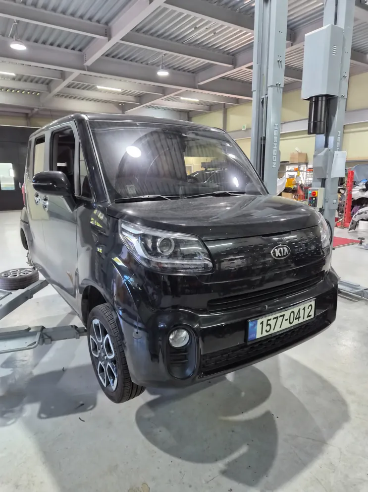
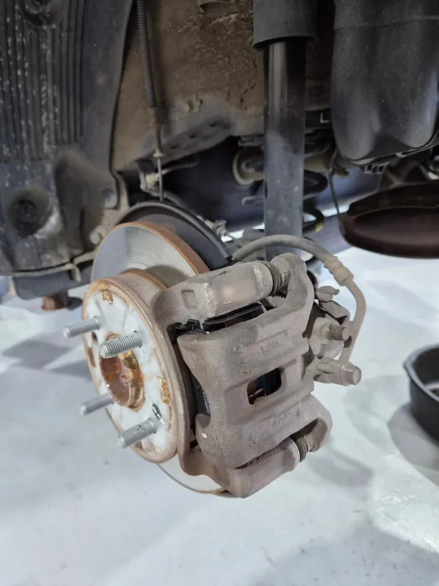
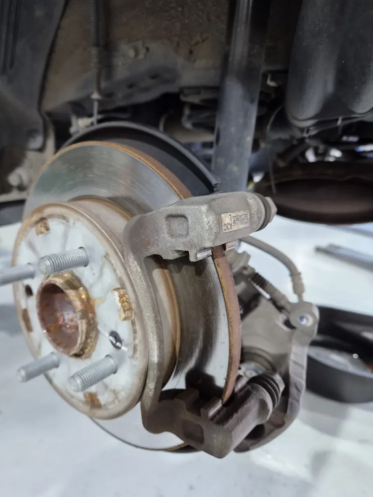
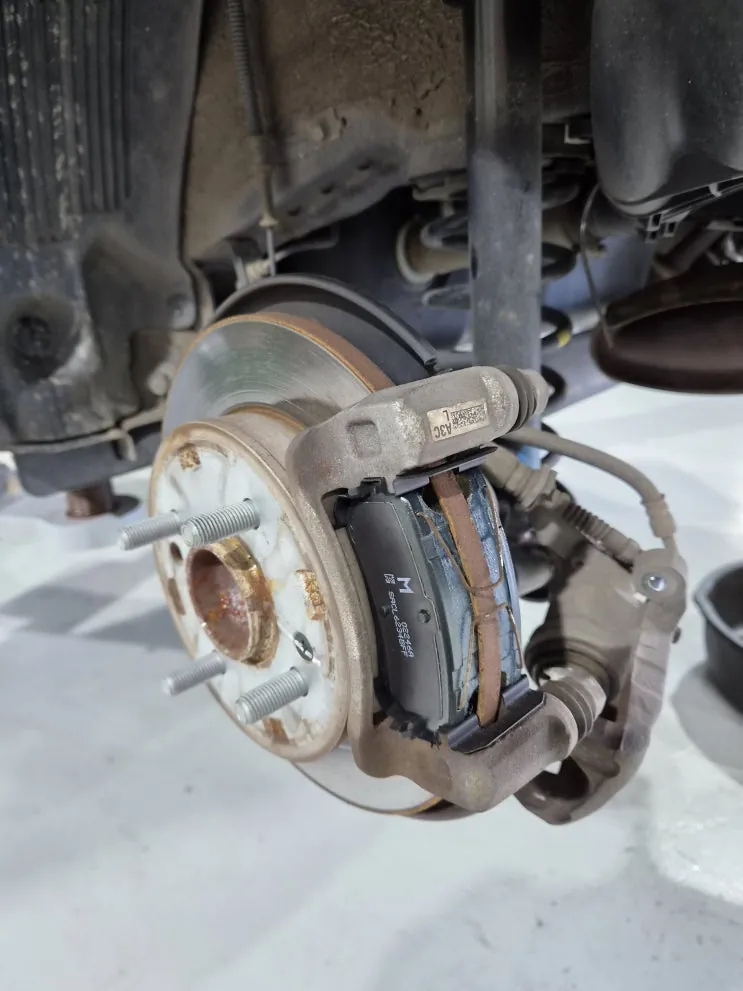
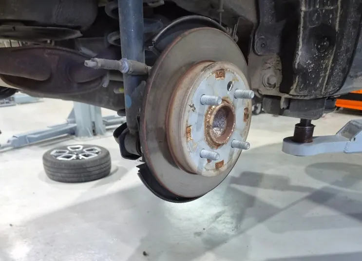
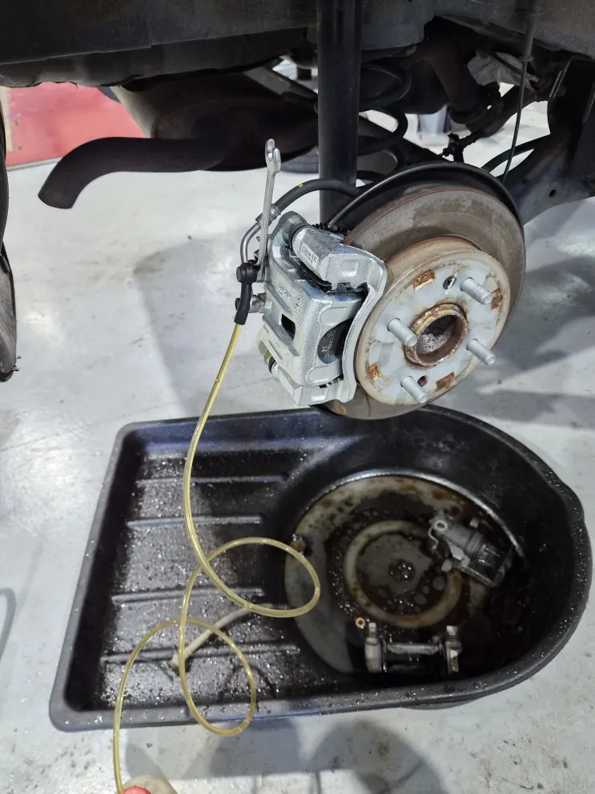
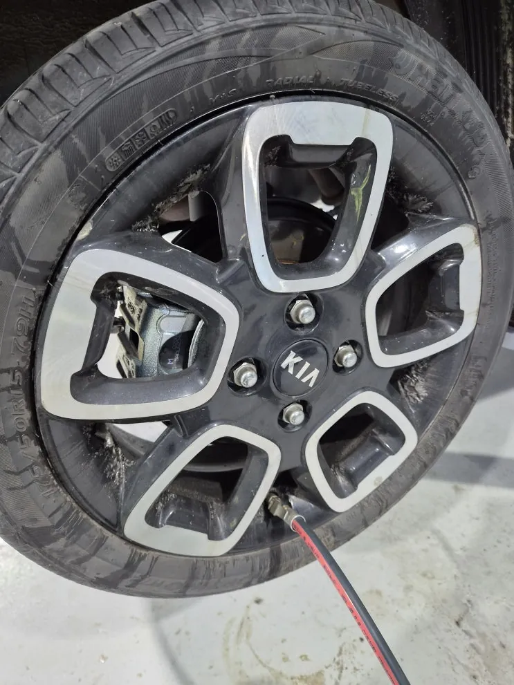

레이 뒤 우측 브레이크 캘리퍼·패드 교환
한눈에 보기
기아 레이 뒤 우측 브레이크 캘리퍼를 교환하면서 같은 쪽 패드도 새것으로 바꿨고, 브레이크액 에어빼기와 주차 브레이크 작동·간극 확인, 시운전으로 쏠림과 소음이 없는지 점검한 뒤 출고했습니다.
- 차량
- 기아 레이
- 증상
- 뒤 우측 브레이크 캘리퍼 교환 필요
- 작업
- 제동 상태·누유 점검
- 휠 탈거
- 캘리퍼·패드 탈거
- 디스크·캐리어·슬라이드 핀 점검
- 신품 캘리퍼·패드 장착
- 브레이크액 에어빼기
- 주차 브레이크 점검
- 시운전
- 작업장
- 그릿서비스 · 경기도 파주시 교하로 1312-53, 1동 1층

입고 내용
기아 레이가 뒤 우측 브레이크 캘리퍼 교환으로 입고됐습니다. 입고 점검에서 브레이크 페달 감각과 제동 상태, 브레이크액이 새는 곳이 있는지를 먼저 확인했습니다.
캘리퍼는 브레이크 디스크를 양옆에서 감싸고 있는 부품입니다. 페달을 밟으면 유압이 캘리퍼 안의 피스톤을 밀고, 피스톤이 패드를 디스크에 눌러 그 마찰로 차를 세웁니다. 뒷바퀴 캘리퍼는 차종에 따라 주차 브레이크 기능과 연결되어 있기도 합니다.


캘리퍼 이상 때 나타나는 증상
피스톤이나 슬라이드 핀이 굳어 버리면 패드가 디스크에서 완전히 떨어지지 않습니다. 이때 일반적으로 다음과 같은 증상이 나타날 수 있습니다.
제동할 때 차가 한쪽으로 쏠리거나, 주행 후 한쪽 바퀴만 뜨겁고 타는 냄새가 나거나, 바퀴 쪽에서 긁히거나 끌리는 소리가 납니다. 페달이 물렁해지고 제동 거리가 길어지기도 하며, 한쪽 패드만 유난히 빨리 닳거나 브레이크액이 샌 흔적이 보이기도 합니다. 주차 브레이크를 풀었는데도 제동이 남아 있는 느낌이 들 수도 있습니다.
이런 상태를 그대로 두면 좌우 제동력 차이 때문에 급제동 때 차가 한쪽으로 끌려갈 수 있고, 패드가 계속 마찰해 과열되면 브레이크액이 끓어 제동력이 갑자기 떨어지는 베이퍼록으로 이어질 수도 있습니다.

패드를 함께 교환한 이유
이상이 있던 캘리퍼 쪽 패드는 한쪽으로 치우쳐 닳았거나 열을 받아 상했을 수 있습니다. 새 캘리퍼에 닳은 패드를 그대로 쓰면 좌우 제동력이 달라질 수 있고, 패드 교환 시기가 가까운 상태라면 머지않아 다시 분해해야 합니다. 그래서 캘리퍼를 바꿀 때는 패드 상태를 함께 보고 같이 교환하는 쪽을 권합니다. 이번 레이도 패드를 함께 교환했습니다.


교환 작업
차를 리프트로 들어 올리고 바퀴를 떼어 냈습니다. 브레이크 호스와 주차 브레이크 연결부를 분리한 다음 기존 캘리퍼와 패드를 탈거했습니다.
탈거한 김에 디스크의 마모와 표면 상태, 캐리어와 슬라이드 핀 상태를 살펴보고, 필요한 곳은 청소한 뒤 그리스를 발랐습니다. 이어서 새 패드와 신품 캘리퍼를 달고 규정 토크로 조였습니다.
호스를 다시 연결한 뒤 브레이크 라인 안의 공기를 빼고 브레이크액 양을 확인했습니다. 공기가 남아 있으면 페달이 물렁해지기 때문에 빠뜨릴 수 없는 단계입니다.

출고 점검
주차 브레이크가 제대로 걸리고 풀리는지, 간극은 맞는지 확인했습니다. 바퀴를 규정 토크로 달고 시운전하면서 제동력, 소음, 한쪽 쏠림이 없는지 최종 점검한 뒤 출고했습니다.
평소 큰 이상을 못 느끼더라도 제동할 때 쏠림이나 소음, 페달 느낌의 변화가 있다면 브레이크 점검을 받아 보시기 바랍니다.

자주 묻는 질문
캘리퍼만 바꾸면 안 되나요? 패드도 꼭 바꿔야 하나요?
이상이 있던 캘리퍼 쪽 패드는 편마모나 열 손상이 있을 수 있고, 닳은 패드를 새 캘리퍼와 쓰면 제동 균형이 달라질 수 있어 패드 상태를 보고 함께 교환하는 것을 권합니다.
레이, 비슷한 증상이라면 사진부터 보내 주세요
파주·운정·교하·금촌 어디서든 전화나 카톡으로 상태를 먼저 알려 주시면 확인 후 안내해 드립니다. 카톡에는 손상 부위가 보이게 찍은 사진을 함께 보내 주세요.
그릿서비스 · 경기도 파주시 교하로 1312-53, 1동 1층 · 네이버 지도
이 작업의 원문 기록: 네이버 블로그에서 보기